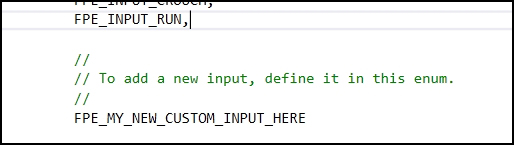
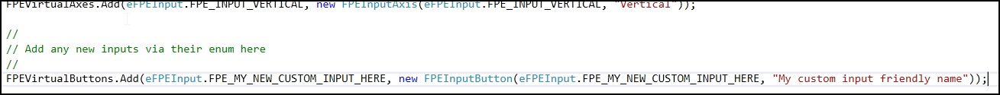
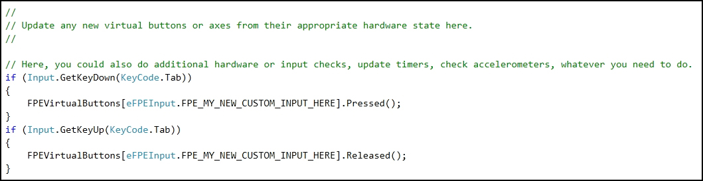
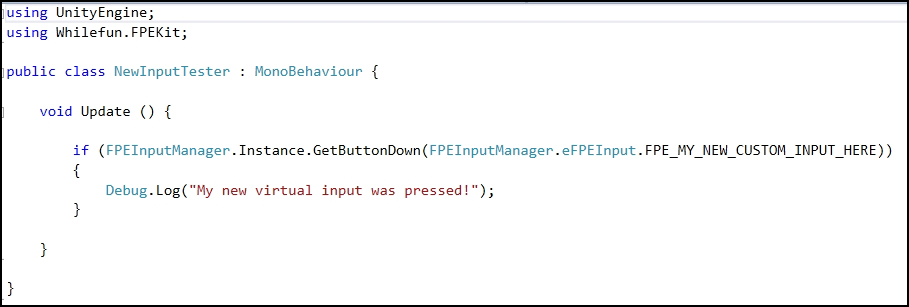

As of version 2.0 of First Person Exploration Kit, all input is handled through the FPEInputManager prefab using the FPEInputManager.cs script. This new system provides a layer of abstraction between Hardware and Unity's Input system, and the use of those inputs
The key advantage to a virtualized input system is that multiple Unity or Direct Hardware inputs can be combined into one virtual button or axis. You can also combine Unity Input checks with direct hardware checks if required. For example, a Unity Input combined with a direct key check, and an analog stick can all be mapped to a single button state. The downstream systems can just check one button state, and never have to change if more inputs are added or input definitions or supported hardware changes.
You can easily add a new virtual button or axis to the FPEInputManager script by extending the existing eFPEInput enum:
There are sections dedicated in the script for your new custom inputs, if required. After adding a new virtual button or axis, you add it to the appropriate collection (FPEVirtualAxes or FPEVirtualButtons), then set its value in Update or FixedUpdate as desired.
Once the input is defined, you can update its state however you want. Here, we update the state of our new input based on direct hardware check of the tab key. But the button could also be updated based on a gamepad stick, Unity Input, hardware accelerometer, or whatever else is required.
No matter how complex the input update is, the downstream systems (like player or interaction controls) can just check the single virtual input state. Here, we check our new input and print a debug message.
